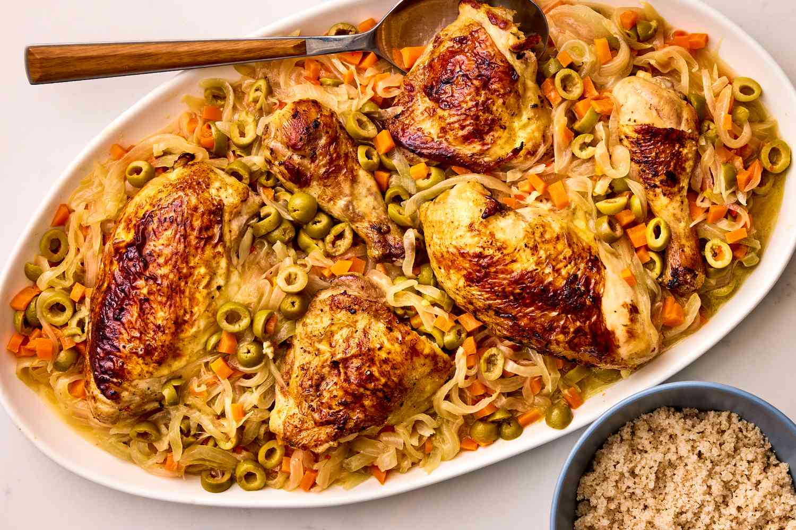
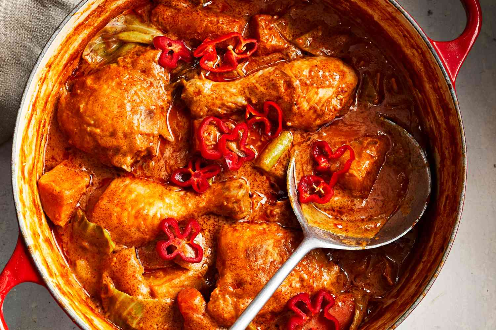
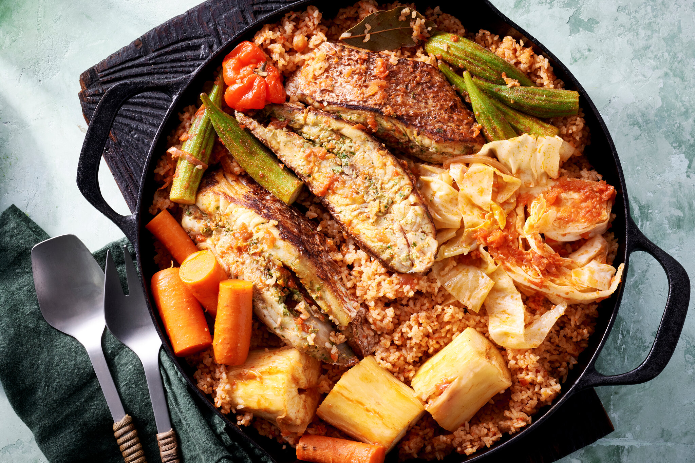

Flag of Senegal with green, yellow, and red stripes and a green star in the center.
Senegal is a country located on the western coast of Africa, bordered by the Atlantic Ocean. Known for its vibrant culture, rich history, and political stability, Senegal plays a prominent role in West Africa. Dakar, the capital, is a major hub for arts, fashion, and trade in the region.
Brief History
Senegal was a French colony until it gained independence on . The country was the capital of FWA for many years. Since independence, Senegal has remained one of the more politically stable countries in Africa, with peaceful transitions of power.
Geography & Population
Map of Senegal highlighting key regions.
Senegal spans an area of approximately 196,722 square kilometers. It is home to 17.2 million people, with a diverse ethnic composition including Wolof, Fula, and Serer groups. The official language is French, though Wolof is widely spoken as a lingua franca.
Economic Overview
Senegal's economy is driven by agriculture, mining, and tourism. The country is a top exporter of peanuts, fish, and cotton. In recent years, there has been significant investment in energy and infrastructure projects to further boost the economy.
Culture & Daily Life
Senegalese daily life blends traditional customs with modern influences. In urban centers like Dakar, people enjoy a lively nightlife, music festivals, and bustling markets. In rural areas, life revolves around agriculture and tight-knit communities, where traditional ceremonies remain important.
Political System
Senegal is a republic with a semi-presidential system. The president serves as head of state, while the prime minister acts as head of government. The National Assembly forms the legislative branch. Macky Sall has been president since 2012, and the country has a long tradition of democratic elections and peaceful transitions.
Educational System
Education is highly valued in Senegal, with schooling mandatory until the age of 16. Senegal boasts several prominent universities, including the renowned Cheikh Anta Diop University in Dakar. The country has made strides in increasing literacy rates, though disparities remain between urban and rural areas.
Popular Senegalese Dishes
Yassa
Yassa is a flavorful dish made with marinated chicken or fish, served with onions and lemon sauce.

Maafé
Maafé is a rich and hearty peanut-based stew, typically made with meat and vegetables.

Thieboudienne
Thieboudienne is considered Senegal's national dish, a delicious combination of fish, rice, and vegetables.

Languages
Senegal is home to a rich linguistic diversity, with many languages spoken across the country. The table below highlights some of the most widely spoken languages, along with their percentage of the population and their officiality.
Language
Percentage
Officiality
French
Official language
Nationally
Wolof
80%
Lingua franca
Pulaar
24%
Regionally
Serer
15%
Regionally
Jola
4%
Regionally
Mandinka
4%
Regionally
Additionally, several other indigenous languages such as Soninke and Balanta are also spoken throughout Senegal.